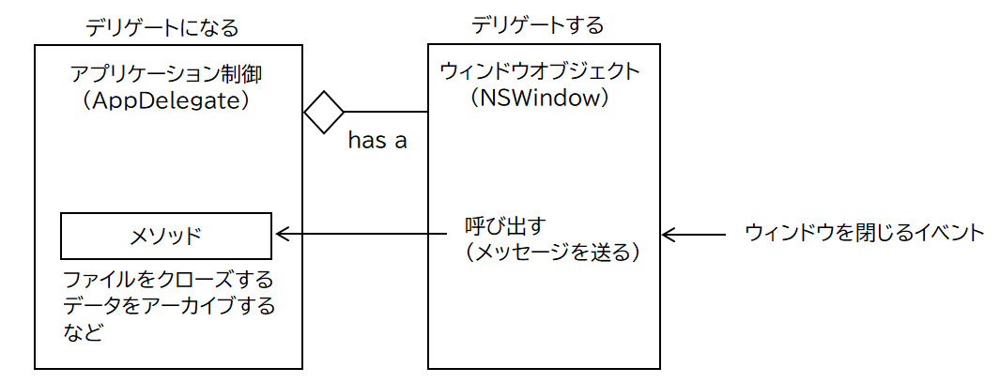
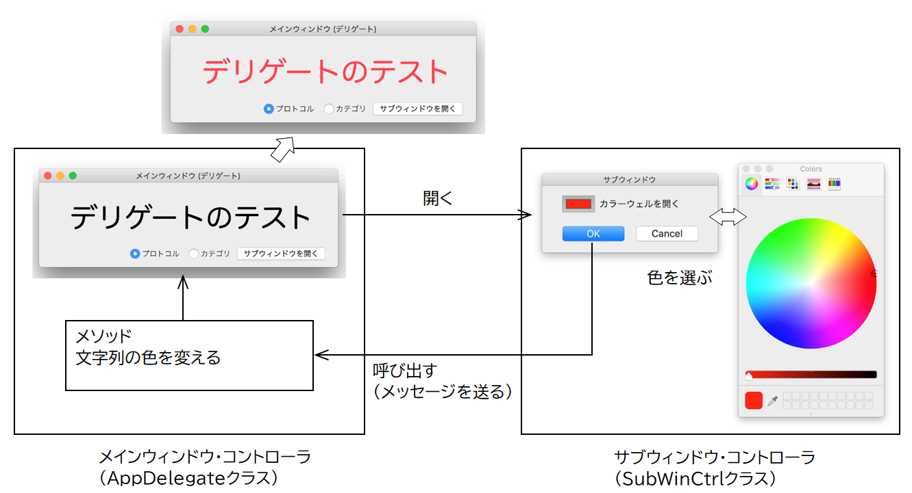

デリゲートを理解する
デリゲートとは
アプリケーションのウィンドウを閉じるとき、何らかの後処理、例えばファイルをクローズしたり、入力中のデータのアーカイブが必要になることがある。この場合、イベントを受け取るクラスと、イベンントに対応した処理を実装するクラスを別々に作成することができる。その方法のひとつが「デリゲート」である。
ウィンドウ・アプリケーションのイベント処理は典型的な例で、
ユーザ操作のイベントを受け取るNSWidowクラス/NSViewクラスと、アプリケーションを制御するAppDelegateクラスから構成される。

AppDelegateクラスに、ウィンドウやビューのイベントに応じたアプリケーション固有の処理（デリゲートメソッド）を実装しておく。ウィンドウやビューオブジェクトは、AppDelegateオブジェクトに対する参照を保持し、イベントを受け取ったらそれを通してデリゲートメソッドを起動する。
この関係は、ウィンドウオブジェクトはAppDelegateオブジェクトに対して処理をデリゲート「委託」する。AppDelegateオブジェクトはウィンドウオブジェクトのデリゲート「受託者」になる、と表現する。
サンプルプログラムの仕様
メインウィンドウからサブウィンドウを開く。サブウィンドウではカラーウェルを使ってユーザが色を選択する。メインウィンドウはサブウィンドウで選択された色を使ってテキストフィールドの文字色を変更する。

プロトコルによるデリゲート
１. プロトコルの宣言
ヘッダファイルを作成し、デリゲートメソッドのインタフェース仕様を定義する。メソッドの名前でイベントの種類がわかることが望ましい。
２.デリゲートメソッドを呼び出すクラス（サブウィンドウ・コントローラ）
デリゲート変数の定義
参照のid型はプロトコルに準拠していることを宣言する。これによって、デリゲートオブジェクトへのアクセスは、プロトコルに宣言されたメソッドの実行だけが許される。循環参照によるデッドロックを避けるためプロパティの所有属性はweakにする。
デリゲートメソッドの呼び出し
特定のイベントを補足したら、参照変数を通して、デリゲートメソッドを呼び出す。このとき対象メソッドが実際にに実装されているか否かのチェックをメソッドを起動する前に行うことができる。
３. デリゲートメソッドを実装するクラス（メインウィンドウ・コントローラ）
プロトコルを採用し、デリゲート（受託者）になることを宣言する。
デリゲートメソッドを実装する
デリゲート変数へ自身のオブジェクトをセッットする
サブウィンドウ・コントローラに定義されるデリゲート変数に、自身への参照をセットする。これ以降サブウィンドウ・コントローラは、メインウィンドウ・コントローラに実装したデリゲートメソッドを起動することができるようになる。
デリゲートメソッドを実装するクラスは本編ではselfにしているが、任意のクラスに実装することもできる。デリゲート変数にそのクラスののオブジェクトを設定すれば良い。
カテゴリによるデリゲート
カテゴリによるデリゲートとは、カテゴリ宣言にデリゲートメソッドの定義を記述するというテクニックである。
デリゲートメソッドを呼び出すクラス（サブウィンドウ・コントローラ）
デリゲートの本質は、「他のオブジェクトへの参照」である。コンパイルによる名前の解決さえ通れば、参照を通してそのオブジェクトのプロパティへのアクセス、インスタンスメソッドの実行が可能になる。
メソッドを定義したカテゴリ宣言ファイルをインポートするだけで、デリゲートメソッドを呼び出すことができる。カテゴリ対象クラスは、フレームワークのクラスであれば実は何でも構わない。
コンパイルが通ることが目的なので、デリゲートメソッドを実装しているクラスをのインタフェース宣言を直接インポートしても構わない。
サンプルアプリケーションの場合なら、
SubWinCtrl.mで、AppDelegate.hをインポートする。
カテゴリの機能については「カテゴリによる機能拡張」も参照のこと。
ソースコード
メインウィンドウ制御 AppDelegate
サブウィンドウ制御 SubWinCtrl
プロトコル宣言 ChangeColorDelegate.h
カテゴリ宣言 NSObjrctChangeColor.h